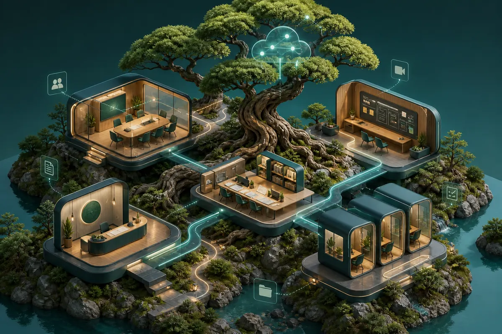

01 / BonsAI City
Połącz zespół, nie dodając chaosu.
BonsAI City to wspólna cyfrowa przestrzeń, w której ludzie, projekty, dokumenty, spotkania i obowiązki znajdują się w jednym czytelnym środowisku.
Zamiast szukać w różnych czatach, folderach i narzędziach, każda osoba widzi informacje potrzebne do swojej pracy.
- Jedno miejsce dla zespołu, projektów i komunikacji.
- Jasne odpowiedzialności i postęp bez ciągłych spotkań.
- Widoki dopasowane do osób, ról i projektów.
Po ludzku: Cyfrowa siedziba firmy stworzona do współpracy, a nie gromadzenia bałaganu.